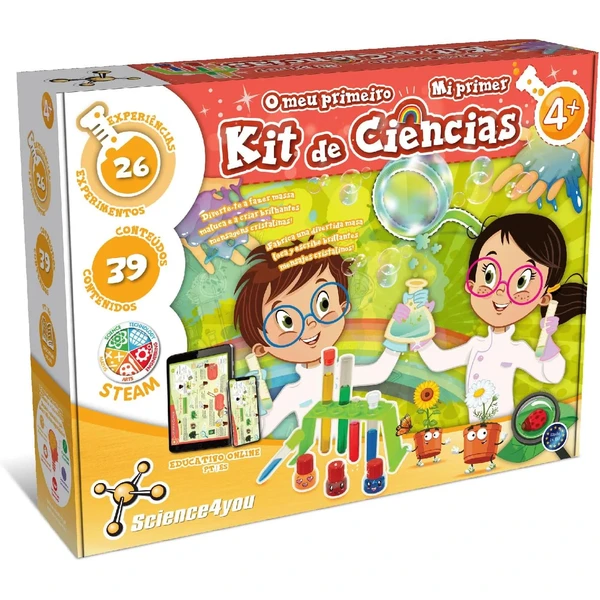

👶 4 años
Science4you Primer Kit de Ciencias
Un kit con 26 experimentos y material real a tamaño infantil (gafas, pipetas, tubos de ensayo, lupa) para descubrir cómo se crean los colores, hacer pompas de jabón gigantes o fabricar una masa loca.
⭐
¿Por qué nos gusta?
- ✔26 experimentos distintos en un solo kit.
- ✔Material de laboratorio real, a tamaño infantil.
- ✔Libro educativo online con las instrucciones.
💬
Lo que más destacan las familias
Lo que más suele gustar es la variedad de experimentos, que hace que no se cansen enseguida y quieran probar el siguiente. Los padres cuentan que es una manera estupenda de despertar la curiosidad sin que resulte complicado de seguir.